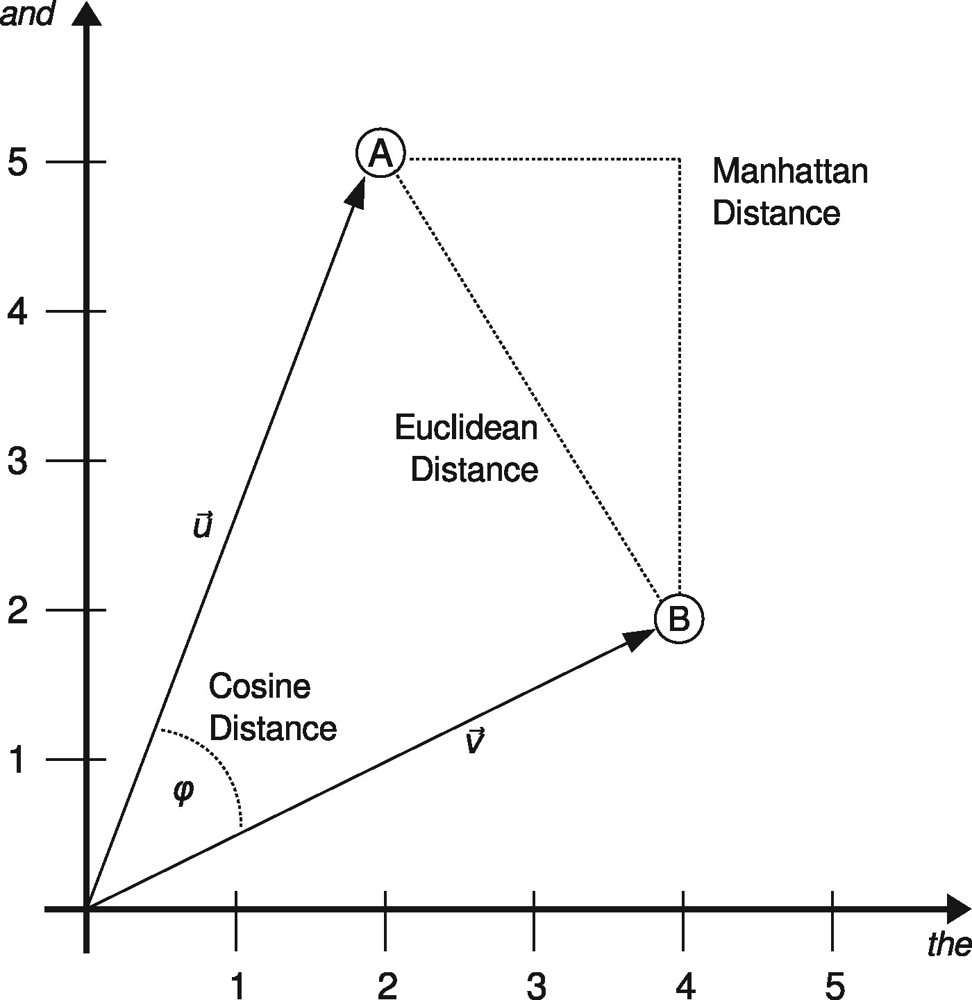
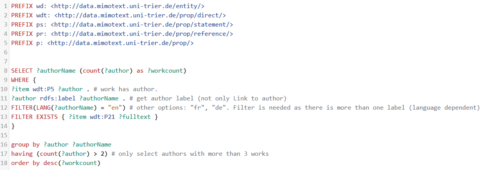
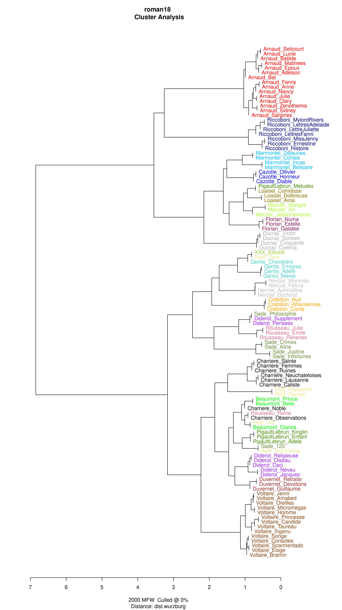
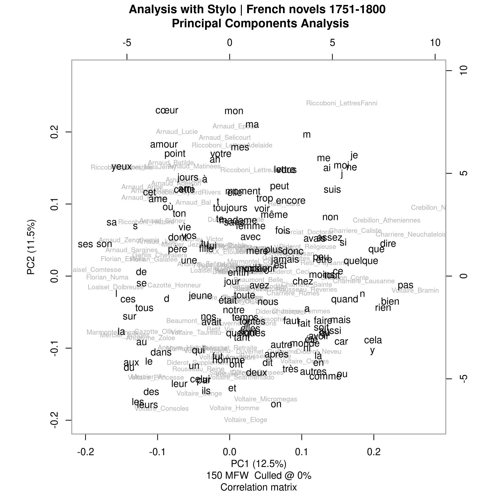
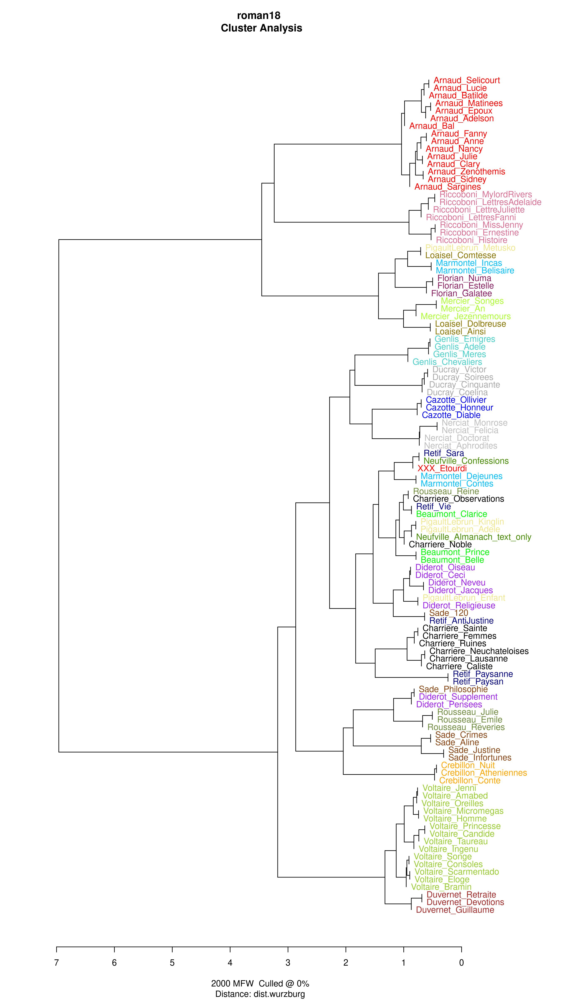
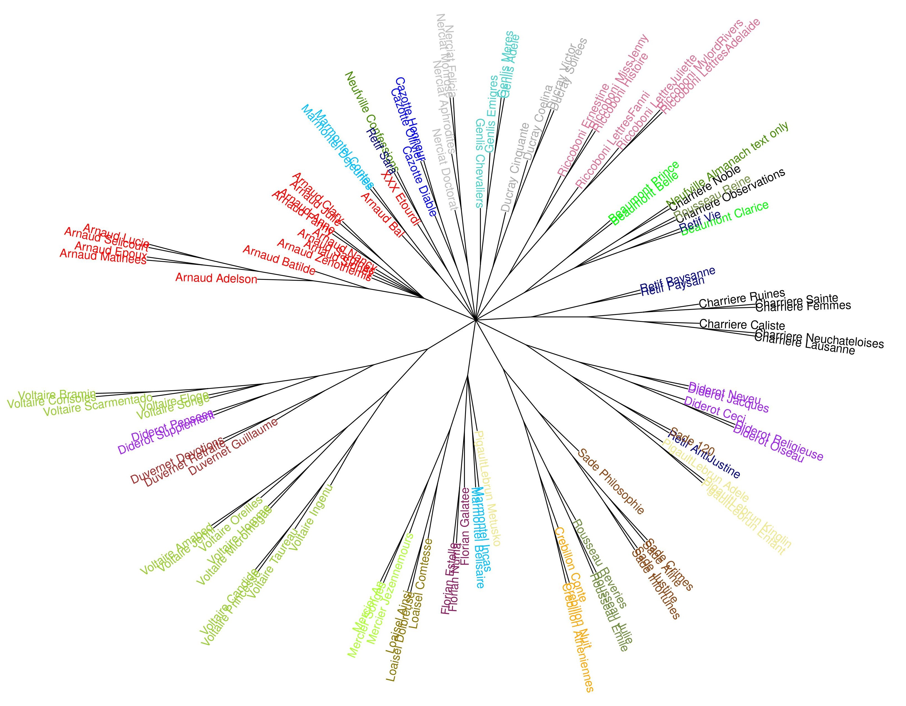
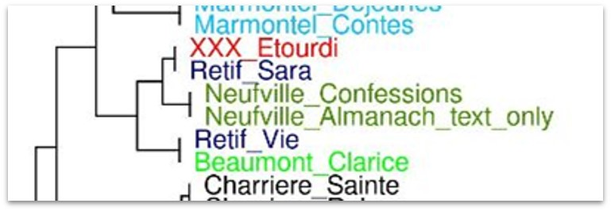
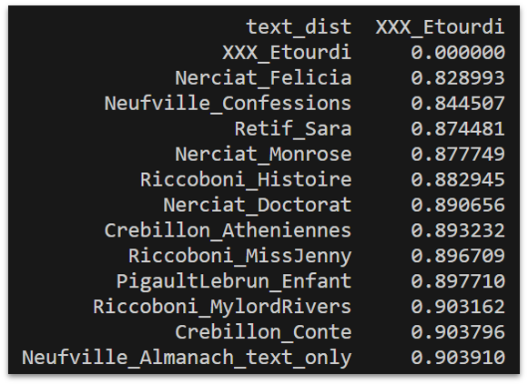
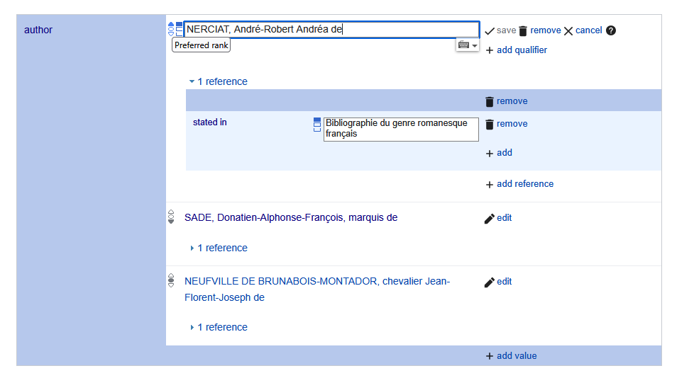

2 Stilometrische Analyse von Französischen Romanen 1751-1800
The close reader sees things in a text — single moments and large amorphous movements —to which computer programs give no easy access. The computer, on the other hand, reveals hidden patterns and enables us to marshal hosts of instances too numerous for our unassisted powers. — (Burrows 2002a: 696)
2.1 Einleitung: Was ist Stilometrie?
Was ist Stilometrie und wozu können wir die Methode hinsichtlich einer datenbasierten Literaturgeschichte einsetzen? Die Methode, die Anwendung sowohl in den Digitalen Geisteswissenschaften als auch in der forensischen Linguistik findet, nutzt linguistische Merkmale, statistische Modelle, und computergestützte Verfahren, um stilistische Muster in schriftlichen Texten zu identifizieren und zu vergleichen. Eines der meist verbreiteten Ziele der Stilometrie ist es dabei, die Autorschaft eines Textes mit computationellen Mitteln nachzuweisen (Burrows 2005; Craig / Kinney 2009; Hoover 2010; Rotari / Jander / Rybicki 2021). Daneben gibt es jedoch auch Studien, die die statistischen sprachlichen Eigenschaften hinsichtlich von Gender-Unterschieden, Phänomene wie die individuellen Veränderungen eines Schreibstils im Laufe der Zeit oder in unterschiedlichen literarischen Gattungen analysieren (Holmes 1998; Jannidis / Lauer 2014; Schöch 2017; Weidman / Pastor 2021).
Der Begriff Stilometrie setzt sich aus den beiden Wortteilen “Stil” und “-metrie” zusammen, also eine literarische oder linguistische Kategorie (Stil) und das Konfix “-metrie”, das suggeriert, dass etwas gezählt wird.1 Zunächst stellt sich daher die Frage: Was ist Stil? Dazu haben Herrmann, van Dalen-Oskam und Schöch 2015 eine Definition formuliert, die man sowohl für computationelle Methoden als auch im klassischen literaturwissenschaftlichen Sinne anwenden kann: “Style is a property of texts constituted by an ensemble of formal features which can be observed quantitatively or qualitatively” (Berenike Herrmann / Van Dalen-Oskam / Schöch 2015: 44). Stilometrie nutzt das Zählen stilistischer Merkmale in Form der Verwendungshäufigkeit bestimmter Wörter (‘most frequent words’), um Aussagen zur Textähnlichkeit zu generieren, die unter bestimmten Bedingungen Rückschlüsse auf die Autorschaft zulassen.2
Das vorliegende Kapitel beginnt damit, die Anfänge bzw. wegweisende Studien der Stilometrie zu beschreiben. Als Pionierstudien der Stilometrie werden die Studie zu den Federalist Papers (Mosteller / Wallace 1983) und Burrow’s Delta (Burrows 2002b) zusammengefasst. Als weitere theoretische Grundlage werden verschiedene Distanzmaße und zudem die Relevanz des R-Pakets ‘stylo’ innerhalb der Community der Digital Humanities beschrieben.
Im Anschluss beschreibe ich einen konkreten Anwendungsfall. Dazu untersuche ich eine Fallstudie zu einem Roman mit ungeklärter Autorschaft aus der Textsammlung roman18 in mehreren Schritten: Verwendung eines Subkorpus von roman18, Analyse mit um Texte eines potentiellen Autors erweitertem Datensatz, Hierarchical Wards Clustering, Bootstrap Consensus Tree. Eine überraschende Erkenntnis liefert der Vergleich aus Clustering und numerischen Distanzwerten der stilometrischen Analyse. Abschließend beschreibe und diskutiere ich die Modellierung in Wikibase unter Verwendung von ‘ranks’ und SPARQL-Abfragen zu Gemeinsamkeiten stilometrisch naher Werke.
Keywords: Stilometrie, Federalist Papers, Delta, stylo, Hierarchical Wards Clustering, Bootstrap Consensus Tree, Principal Component Analysis, Wikibase, preferred rank, SPARQL.
2.2 Pionierstudien und Toolentwicklung
Eine Studie von Mosteller und Wallace 1964 zu den Federalist Papers verschaffte der Stilometrie den wissenschaftlichen Durchbruch: Die Federalist Papers sind eine 1787-1788 veröffentlichte Sammlung von 85 Essays zur politischen Theorie. In diesen 900 bis 3500 Wörter langen Schriften, die während der Debatte über die Ratifizierung der Verfassung der Vereinigten Staaten verfasst wurden, werden die Argumente für das Regierungssystem dargelegt, dass die USA schließlich angenommen haben und unter dem sie bis zum heutigen Tag leben. Die Autorschaft dieser Artikel, unterzeichnet mit dem Pseudonym “Publius”, war lange Zeit unklar (Laramée 2018). Mithilfe der Analyse der Wortfrequenzen gelang es Mosteller und Wallace, die ungeklärte Zuordnung aus mehreren möglichen Autoren aufzulösen (Kenny 1982: 8–9). Die Bedingungen in der Federalist Paper-Studie können sicherlich auch als ideal gelten, werden doch mehrere Parameter - wie Kontext, Gender und Gattung - konstant gehalten.
Ein weiterer bedeutender Beitrag zur Stilometrie stammt von John Burrows, der das Distanzmaß ›Delta‹ entwickelte, mithilfe dessen sich für einen anonymen Text eine Zuordnung zu einem Korpus bekannter Texte und Autor:innen treffen lässt. Seine Studie, die multivariate statistische Verfahren wie Cluster- oder Principal Component Analyse (PCA) einsetzt, und die daraus resultierenden Erkenntnisse haben bedeutende Impulse für die Stilometrie und die Autorschaftsattribution in den Computational Literary Studies geliefert. Burrows Delta verwendet den Manhattan-Abstand und hat sich als besonders effektiv erwiesen, um Autorschaftsfragen oder die Beteiligung einzelner Autoren an umfangreichen Textsammlungen zu klären (Büttner et al. 2017). Basierend auf Burrows Delta wurden weitere Varianten zur Verbesserung vorgeschlagen, beispielsweise der Vorschlag, statt der Manhattan-Distanz den Kosinus-Winkel zwischen den Vektoren zu verwenden (Smith / Aldridge 2011).3
Bezüglich der Toolentwicklung kommt Maciej Eder, Jan Rybicki und Mike Kestemont der Verdienst zu, ein eingängiges, leicht bedienbares Tool für die Statistikumgebung R entwickelt zu haben, dass auch zur weiten Verbreitung der Methode in den Digital Humanities und darüber hinaus geführt hat (Horstmann 2018): “Stylo” (Eder / Rybicki / Kestemont 2016).
2.3 Theoretische Grundlagen: Distanzmaße

Abb. 6.1 Distanzmaße: Manhattan-Distanz, Euklidische Distanz und Kosinus-Distanz [Stefan Evert, 2017. Lizenziert unter Creative Commons Namensnennung 4.0 International (CC-BY)]
Im Kontext der Textanalyse werden verschiedene Distanzmaße verwendet, um die Unterschiede zwischen Texten zu quantifizieren (cf. Schöch 2017: 294–295). Die Manhattan-Distanz misst die absolute Distanz zweier Vektoren in jeder einzelnen Dimension. Die Summe dieser absoluten Distanzen ergibt die Gesamtdistanz, wobei jede Dimension gleich gewichtet wird (Abb. 6.1) .
Die Euklidische Distanz ähnelt der Vogelfluglinie zwischen zwei Punkten. Hierbei werden die Distanzen in jeder Dimension quadriert, summiert und schließlich die Quadratwurzel aus der Gesamtsumme gezogen. Dies führt dazu, dass größere Distanzen in einer einzelnen Dimension durch die Quadrierung stärker gewichtet werden, was in der stilometrischen Autorschaftsattribution besonders relevant ist, da häufig vorkommende Wörter einen überproportionalen Einfluss haben können. Bei der euklidischen Distanz haben die höchstfrequenten Wörter besonders viel Einfluss.
Der Kosinus-Abstand wird als eine Form der Vektor-Normalisierung betrachtet, da bei der Berechnung des Winkels zwischen Vektoren die Länge der Vektoren keine Rolle spielt. Im Gegensatz zu Manhattan- und Euklidischem Abstand ermöglicht der Kosinus-Abstand eine Bewertung, die unabhängig von der Länge der Vektoren ist.
In Bezug auf die stilometrische Autorschaftsattribution betonen Büttner et al. 2017, dass das charakteristische stilistische Profil eines Autors eher in der qualitativen Kombination bestimmter Wortpräferenzen zu finden ist. Dies bezieht sich auf das grundlegende Muster von über- bzw. unterdurchschnittlich häufigem Gebrauch von Wörtern, anstatt auf die Amplitude dieser Abweichungen. “Delta” in der stilometrischen Autorschaftsattribution nutzt die Manhattan-Distanz und erweist sich als erfolgreich, da es strukturelle Unterschiede in den sprachlichen Vorlieben eines Autors erfasst, ohne stark von der Intensität des Autorenprofils in einem bestimmten Text beeinflusst zu werden (Evert et al. 2016).
Nachdem nun wegweisende Studien der Stilometrie vorgestellt und theoretische Grundlagen der Methode erläutert wurden, stellt sich die Frage, wozu stilometrische Analysen im Kontext einer datenbasierten Literaturgeschichte beitragen können. Eine der häufigsten Anwendungsfälle stellt sicherlich die Autorschaftsattribution dar. Ob J. K. Rowling (Juola 2013) oder Shakespeare (Craig / Kinney 2009) lassen sich hier viele Anwendungsstudien zitieren.
Stilometrie lässt sich jedoch neben der Analyse von Autorschaftssignalen auch zur Bestimmung von Gattungszugehörigkeit einsetzen (Schöch 2014) oder in der diachronen Betrachtung einer stilistischen Handschrift eines einzelnen Autors oder Autorin, beispielsweise in der Frage: Gibt es so etwas wie “late style” (Pearce Reeve 2018; Rebora / Salgaro 2018)?
Wieso funktioniert die Methode Stilometrie? Dies lässt sich durch einen interessanten historischen Vergleich in der kunsthistorischen Forschung veranschaulichen, den Mike Kestemont beschreibt. Der Wechsel von Inhaltswörtern zu Funktionswörtern in Studien zur Autorschaftsattribution findet hier eine bemerkenswerte Parallele:
“Giovanni Morelli (1816-1891) was among the first to suggest that the attribution of, for instance, a
Quattrocento painting to some Italian master, could not happen based on ‘content’ […] Morelli thought it better to restrict an authorship analysis to discrete details such as ears, hands and feet”
(Kestemont 2014: 61)
Auch in der Malerei lassen sich über die Analyse von unwillkürlich getroffenen Entscheidungen, wie der Art, die Hände, Ohren oder Füße zu malen, Rückschlüsse auf die Autorschaft ziehen. Das Zitat unterstreicht die Faszination darüber, dass Menschen, sei es in Texten oder Gemälden, unbewusste Entscheidungen treffen, die in der Summe Aufschlüsse über ihre künstlerische Handschrift geben, so auch bei der Verwendung bestimmter Funktionswörter.
Im nächsten Abschnitt sollen mithilfe von Stilometrie innerhalb des Korpus französischer Romane 1751-1800 (roman18) Aussagen zur möglichen Autorschaft untersucht werden; Erzählform oder thematische Ausrichtung sind ebenfalls im Graphen als Statements hinterlegt und könnten theoretisch in einem weiteren Schritt auch mit in Betracht gezogen werden, werden jedoch in der hier vorliegenden Anwendung ausgeklammert. Stilometrie wird in der hier vorliegenden Untersuchung mit dem Tool Stylo in R durchgeführt (Eder / Kestemont / Rybicki 2016).
2.4 Fallstudie: Wer ist der Autor von L’Étourdi (1784)?
Ein Roman mit abweichenden Angaben zur Autorschaft aus der Romansammlung roman18 (Röttgermann 2023) soll nun als Anschauungsbeispiel der stilometrischen Analyse dienen. L’Étourdi ist ein Roman aus dem Jahr 1782. Laut bibliographischen Metadaten (Martin / Mylne / Frautschi 1977: 272) ist der Autor André-Robert Andréa de Nerciat (Abb. 6.2).4 Die für die Generation des TEI-Volltexts verwendete Quelle Wikisource hingegen bezeichnet das Werk als “Anonyme, attribué à Donatien Alphonse François de Sade ou attribué à André-Robert Andréa de Nerciat, ou attribué au chevalier de Neufville-Montador.”5

Da die beiden Quellen verschiedene Aussagen hinsichtlich der Autorschaft des Romans enthalten, eignet sich das Werk gut als Fallbeispiel für eine stilometrische Analyse hinsichtlich der Frage der Autorschaft. Da die Frage der Autorschaft nicht völlig offen ist, sondern es eine begrenzte Zahl von möglichen Kandidaten gibt, können wir im hier skizzierten Forschungsdesign in Anlehnung an Burrows (2002) von einem ‘closed game’6 sprechen.
2.4.1 Korpuszusammensetzung und Textgrundlage
In einem ersten Analyseschritt wurde ein Subkorpus zu roman18 erstellt, welches pro Autor mindestens drei Werke enthält. Dazu wurde eine SPARQL-Abfrage verfasst, die das Volltextkorpus roman18 nach diesem Kriterium filtert (Abb. 6.3).

Das so gefilterte Korpus ergab folgende Autor:innen mit ihrer Anzahl an Werken:
| Autor:in | Anzahl |
|---|---|
| ARNAUD, François-Thomas-Marie de Baculard d’ | 15 |
| VOLTAIRE, François-Marie Arouet de | 14 |
| CHARRIÈRE, Isabelle-Agnès-Elisabeth van Tuyll van Serooskerken van Zuylen, dame de | 8 |
| DIDEROT, Denis | 7 |
| RICCOBONI, Marie-Jeanne Laboras de Mézières, madame | 7 |
| SADE, Donatien-Alphonse-François, marquis de | 6 |
| NERCIAT, André-Robert Andréa de | 5 |
| RÉTIF DE LA BRETONNE, Nicolas-Edme | 5 |
| DUCRAY-DUMINIL, François-Guillaume | 4 |
| GENLIS, Stéphanie-Félicité Ducrest de Saint-Aubin, marquise de Sillery, comtesse de | 4 |
| MARMONTEL, Jean-François | 4 |
| PIGAULT-LEBRUN, Charles-Antoine-Guillaume Pigault de l’Epinay, dit | 4 |
| ROUSSEAU, Jean-Jacques | 4 |
| CAZOTTE, Jacques | 3 |
| CRÉBILLON, Claude-Prosper Jolyot de | 3 |
| DUVERNET, abbé Théophile-Imarigeon | 3 |
| FLORIAN, Jean-Pierre Claris de | 3 |
| LEPRINCE DE BEAUMONT, madame Marie | 3 |
| LOAISEL DE TRÉOGATE, Joseph-Marie | 3 |
| MERCIER, Louis-Sébastien | 3 |
Es ist wichtig, pro Autor:in mehrere Werke im Untersuchungskorpus und damit genug textuelles Untersuchungsmaterial zu haben, um eine erfolgreiche stilometrische Analyse durchzuführen (cf. Eder 2013). Die verwendeten Texte sind zuvor normalisiert und modernisiert worden, Phänomene wie historische Verbformen im Französisch des 18. Jahrhunderts oder Verwendung von Schaft-S wurden so ersetzt.7
In einem ersten Analyseschritt wurden die Werke als Plaintext im Tool Stylo (Eder / Kestemont / Rybicki 2016) in R mit folgenden Einstellungen analysiert: Wurzburg distance, 2000 MFW. Bevor wir die ersten Ergebnisse anschauen und analysieren sei hier in Erinnerung gerufen, dass die stilometrische Analyse nicht nur Hinweise auf die Autorschaft geben kann, sondern dass ebenfalls Gattungssignale, der Publikationszeitrahmen oder thematische Nähe ein Einflussfaktor für eine große Nähe zwischen zwei Werken sein kann.

Hinsichtlich der genannten potentiellen Autoren (Nerciat, Sade) lässt sich im von Stylo verwendeten Hierarchical Ward Clustering im ersten Durchlauf kein eindeutiges Ergebnis erkennen. Der untersuchte Roman clustert weder eng mit den Romanen von Sade, noch mit Nerciats Werken (Abb. 6.4). Je näher die Werke an einem Ast des Dendrograms liegen, desto näher ist auch ihre stilometrische Ähnlichkeit.
Stylo ermöglicht es, das untersuchte Korpus mit einer Principal Component Analyse (PCA) zu untersuchen, um jene Elemente darzustellen, die ausschlaggebende Komponenten der stilometrischen Analyse sind.

Im oberen Bereich der PCA erkennt man, dass in der Principal Component Analyse mehrere Werke des gleichen Autors, Baculard d’Arnaud, clustern (Abb. 6.5). Die hier visualisierten Loadings sind ‘coeur’, ‘mon’, ‘ma’ oder ‘amour’. Es zeigt sich, dass hier einerseits Funktionswörter ausschlaggebend sind, andererseits ist Baculard d’Arnaud ein Verfasser einer Vielzahl von Sentimentalromanen. Insofern sind die hier visualisierten Loadings ‘coeur’ (Herz) oder ‘amour’ (Liebe) plausibel.
Da sich insgesamt im ersten Analyseschritt jedoch keine eindeutige Zuordnung zu den hypothetischen Autoren im Clustering-Verfahren zeigte, wurde ein weiterer Durchgang der stilometrischen Analyse durchgeführt. Einer der potentiellen Autoren, Neufville-Montador, war zunächst nicht im Romankorpus vertreten. Um zu verifizieren, ob sich hier eine stilometrische Nähe zeigt, wurden ergänzend erzählende Texte von Neufville-Montador dem Untersuchungskorpus hinzugefügt.
2.4.2 Sollte doch Apollinaire recht behalten?
Neben Nerciat und Marquis de Sade wird in L’Enfer de la Bibliothèque nationale eine weitere Autorschaftshypothese geäußert: Neufville-Montador. Könnte es sein, dass doch Apollinaire recht hatte, als er schrieb:
“Cet ouvrage a été attribué tour à tour et sans beaucoup de raison au marquis de Sade et au chevalier Andrea de Nerciat. On en a aussi attribué la paternité, avec plus de vraisemblance, au chevalier de Neufville-Montador.” (Apollinaire 1919)
Apollinaire hält demnach Neufville-Montador für den wahrscheinlichsten Autor. Um dies zu überprüfen, wurde in einem zweiten Schritt das für die stilometrischen Analysen verwendete Korpus erweitert. Dazu wurde nach verfügbaren Volltexten des Autors Neufville-Montador recherchiert. Ein von ihm verfasstes Almanach nocturne a l’usage du grand monde 1739-1742, welches als Faksimile in der digitalen Sammlung der französischen Nationalbibliothek verfügbar ist, enthält erzählende Passagen, die für die Analyse verwendet wurden. Außerdem ist ein Roman von Neufville-Almanach über GoogleBooks verfügbar (Confessions de la Baronne de ***, 1848). 8 Beide Werke wurden über die bereits beschriebene Digitalisierungspipeline mithilfe von OCR4all und einem Modell für französische Drucke des 18. Jahrhunderts erschlossen und als Plaintext dem bestehenden Korpus hinzugefügt. Wie hat sich mit dem so erweiterten Datensatz die Analyse verändert?

Abb 6.6 der stilometrischen Analyse mit erweitertem Datensatz zeigt, dass die Werke von Sade zusammen clustern, die Werke von Nerciat zusammen clustern und das untersuchte Werk L’étourdi von den drei möglichen Kandidaten-Autoren am nächsten mit Neufville-Montador clustert. Sollte demnach Apollinaire recht behalten?
Stylo bietet als zusätzliche Möglichkeit der Analyse die Verwendung des ‘Bootstrap Consensus Tree’ (Abb. 6.7). Dabei handelt es sich um eine kreisförmige Visualisierung, die mehrere Durchläufe der Clusteranalyse mit variierender Anzahl der am häufigsten vorkommenden Wörter zu einer konsolidierten Ergebnisvisualisierung zusammenführt. Der Sinn dieser Analyse liegt darin zu überprüfen, wie stabil das Clustering bei verschiedenen Einstellung der Verwendung der MFW (most frequent words) ist. Dieser Prozess, auch als ‘Bootstrap’ bezeichnet, verwebt die individuellen Analysedurchläufe ähnlich dem Schnüren eines Schuhs (‘bootstrapping’) und zieht sie am Ende zusammen. Ähnliche Texte werden hier auf einem Zweig durch Clustering repräsentiert. Bei der Auswahl des ‘Consensus Tree’ müssen zusätzliche Parameter im MFW-Setting festgelegt werden, darunter der Start- und Endpunkt der Analyse (‘Minimum’ / ‘Maximum’), sowie die Anzahl der hinzugefügten Wörter in jeder einzelnen Analyse (‘Increment’). In meiner Analyse habe ich mich für einen Startwert von 2000, ein Inkrement von 100 Wörtern und ein Maximum von 4000 entschieden. Bei dieser Höhe der verwendeten meist frequenten Wörter (2000+) ist von einer Mischung aus Funktions- und Inhaltswörtern auszugehen.

Das schrittweise Erhöhen des Parameter der am häufigsten vorkommenden Wörter (MFW) im Bootstrap Consensus Tree zeigt, dass die Nähe des Textes L’Étourdi zu den verwendeten Texten mit Autorschaft von Neufville-Montador relativ stabil ist (Abb. 6.7). Unter der Annahme, dass entweder Marquis de Sade, Andréa de Nerciat oder Neufville-Montador der Autor von L’Étourdi ist, können wir anhand der Ergebnisse dieser stilometrischen Untersuchung mit dem Tool Stylo in R feststellen, dass Neufville-Montador im hier untersuchten Setting aus der Kandidatenliste als der wahrscheinlichste Autor des Romans gelten kann.
2.4.3 Überraschende Erkenntnis: Dendrogram und numerische Distanzwerte legen verschiedene Hypothesen nahe
Die bisherige Analyse stützte sich wie eine Vielzahl an stilometrischen Studien, die in den Digital Humanities durchgeführt werden auf die Erkenntnis aus der Visualisierung der Dendrogramme oder Bootstrap-Trees. Eine Nähe auf einem Ast des durch Clustering generierten Trees ließ auf eine Nähe der Werke und somit Autorschaften schließen. Diese Annahme ist zwar grundsätzlich nicht als falsch anzusehen und ein Großteil der stilometrischen Studien in den Digital Humanities geht hier ähnlich vor, jedoch zeigte sich überraschenderweise im hier untersuchten Fall, dass Dendrogram und numerische Werte unterschiedliche Autorschaftshypothesen nahe legen (Abb 6.8). Während das Hierarchical Wards Clustering Neufville-Montadors Werke auf dem nächsten Ast zu L’étourdi verortete, zeigen die rohen numerischen Werte ein anderes Bild: Hier liegt Nerciats Werk Félicia am nächsten zu L’étourdi und legt somit eine Autorschaft Nerciats nahe.
 
Im Clustering-Prozess ist jeweils von einem gewissen Informationsverlust auszugehen, sodass hier die numerischen Werte die verlässlichere Quelle darstellen.9 Diese bilden daher auch die Grundlage der im Knowledge Graphen importierten Resource Description Framework (RDF) Triples zur stilometrischen Analyse der Romane.
Eine qualitative Bewertung des Romans und der potentiell ähnlichen Werke anhand der bei Lektüre festgestellten stilistischen Merkmale wären neben der stilometrischen Analyse ein weiterer ergänzender Schritt, der hier jedoch nicht Gegenstand der Untersuchung ist. 10
In einigen Beispielen an SPARQL-Abfragen sei nun illustriert, wie sich diese Statements abfragen lassen und welche Schlüsse sich daraus ziehen lassen.
2.5 Abfrage der stilometrischen Analyse in SPARQL
Die Ergebnisse der hier beschriebenen Analyse sind hinsichtlich der numerischen Werte der stilometrischen Ähnlichkeit im Knowledge Graphen als Statements importiert. Dies ermöglicht es, über entsprechende SPARQL-Abfragen bezogen auf Einzelwerke oder Autoren nach den - laut stilometrischer Analyse - ähnlichsten Werken zu fragen. Im gehe daher in SPARQL-Abfagen der Frage nach, welche Gemeinsamkeiten Werke haben, die sich stilometrisch nah sind: Teilen Sie die Erzählform, Autorschaft oder Tonalität?
Zunächst eine Abfrage, die verdeutlicht, welche Werke stilometrisch nah zu Rousseaus Werken sind.
2.6 Rousseaus Werke im Graphen und Werke, die jenen stilometrisch “nah” sind
Man sieht in den Ergebnissen der Abfrage, dass die nächsten Werke häufig diejenigen des untersuchten Autors (hier: Rousseau) sind (Abb. 6.10). Zu seiner fabel-/märchenhaften Erzählung La reine Fantasque (1758) hingegen sieht man in der Listung der ähnlichsten Werke auch Werke, die ebenfalls Märchen sind, beispielsweise Ah! quel conte! (1754) von Crébillon. Gemeinsamkeiten dieser beiden Werke sind unter anderem ihre Erzählform (“3e personne”), ihr Handlungsort (“cadre fantaisiste“), auch einige aus Topic Modeling hervorgegangene Themenwerte (“monarchie”11) oder ähnliche Hauptfiguren (“la fée Discrette” / “la fée Toutou-rien”).
In diesem Beispiel zeigt sich, dass das Gattungssignal je nach Vergleichskorpus durchaus das Autorschaftssignal überlagern kann.
Wir haben im Knowledge Graphen über SPARQL-Abfragen die Möglichkeit uns anzusehen, welche Gemeinsamkeiten Werke haben, die in einer stilometrischen Analyse unter den nächst ähnlichen Werken sind: Haben Sie den gleichen Autor oder die gleiche Autorin? Teilen Sie die narrative Form? Stimmt ihre Tonalität überein?
2.7 Welche Gemeinsamkeiten haben Werke, die sich basierend auf einer stilometrischen Analyse ähnlich sind: Autor, Tonalität, narrative Form?
Für insgesamt 657 Statements zu französischen Romanen 1751-1800, die über eine stilometrische Nähe12 und Angaben zu Tonalität, narrativer Form und Autor:in verfügen, ergibt sich dabei folgendes Bild: Bei 369 Statements zu stilometrischer Nähe stimmt die narrative Form überein. Bei 382 Statements stimmt der Autor oder die Autorin überein. Bei 157 Statements stimmt die Tonalität der Werke überein, also haben die Werke jeweils den gleichen Wert wie beispielsweise “satire” oder “mélancolie” (Abb. 6.11).
Diese Varianten der SPARQL-Abfragen legen nahe, dass von den gemeinsamen Features im Graphen das Autorschaftssignal am häufigsten zu einer stilometrischen Nähe zweier Werke führt, gefolgt von der narrativen Form (als Beispiel: ‘epistolary’).
2.8 Modellierung des Ergebnisses in Wikibase
Können wir im Hinblick auf das diskutierte Fallbeispiel der Autorschaftsfrage von L’Étourdi mit Sicherheit sagen, dass, basierend auf den numerischen Ergebnissen der vorgestellten stilometrischen Analyse, Nerciat der Autor war? Dies ist in dieser Eindeutigkeit sicher nicht möglich, da die stilometrische Analyse einerseits vom Vergleichskorpus und andererseits von weiteren Einflussfaktoren abhängen kann (Schöch 2017: 296). Schon Burrows spricht in seiner wegweisenden Studie von “likely authorship” (Burrows 2002b).
So hat neben dem Autorschaftssignal auch die thematische Nähe oder ähnliche Gattung einen Einfluss darauf, ob sich Werke in der Analyse nah sind. Es wäre auch möglich, dass eine weitere historische Quelle entdeckt wird, die einen noch nicht im Korpus vertretenen Autor als wahrscheinlichsten Autor annimmt und dessen Werke in der hier vorgestellten Analyse nicht mit berücksichtigt sind, dessen Werke jedoch noch näher an L´Étourdi liegen. Für die berücksichtigten Quellen und das vorgestellte untersuchte Korpus können wir jedoch sagen, dass unter den drei möglichen Autoren die wahrscheinlichste Variante laut stilometrischer Analyse mit den beschriebenen Parametereinstellungen Nerciat darstellt.
Wie lässt sich nun dieses Ergebnis im Knowledge Graphen modellieren? Müssen wir uns hinsichtlich der Werk-Person Relation ‘author of’ im Graphen für einen eindeutigen Wert entscheiden? In der verwendeten Infrastruktur (Wikibase) ist es durchaus möglich, alle drei Varianten als Statements aufzunehmen und über einen weiteren Qualifier (‘rank’) eine Abstufung der Wahrscheinlichkeiten vorzunehmen. Wikibase bietet die Möglichkeit Statements mit einem ‘rank’ zu versehen: wikibase:PreferredRank, wikibase:NormalRank und wikibase:DeprecatedRank sind die Abstufungen, die hier gewählt werden können (Abb. 6.12).13 Dies bietet die Möglichkeit, konfligierende Aussagen im Graphen zu integrieren. Die Ergebnisse der stilometrischen Analyse können so in Wikibase abgebildet werden:
NERCIAT, André-Robert Andréa de - > preferred rank
NEUFVILLE DE BRUNABOIS-MONTADOR, chevalier Jean-Florent-Joseph de -> normal rank
SADE, Donatien-Alphonse-François, marquis de -> deprecated rank

Sollten spätere Analysen oder neue Quellen eine veränderte Sachlage ergeben, können die Ranks der möglichen Werte auch wieder neu justiert werden. Werden in SPARQL-Abfragen keine ‘ranks’ spezifiziert, so wird üblicherweise der Wert, der mit ‘preferred rank’ gekennzeichnet ist, als Ergebnis ausgegeben.14
Zusätzlich zu dieser möglichen Abstufung der Statements wurden für die hier beschriebene stilometrische Analyse in den Graphen die numerischen Werte, die aus der Analyse hervorgegangen sind, als Statements importiert.15 Im Gegensatz zum Clustering Dendrogram erlauben die rohen numerischen Werte im Knowledge Graphen präzisere Aussagen hinsichtlich der stilometrischen Nähe zweier Werke (cf. Schöch 2023).
2.9 Zusammenfassung
Im vorliegenden Kapitel ließ sich zeigen, wie eine umstrittene Autorschaft eines französischen Romans des 18. Jahrhunderts mithilfe der Computational Literary Studies Methode Stilometrie zwar nicht abschließend geklärt werden kann, jedoch aus einer Auswahl an möglichen Kandidaten (‘closed game’) der wahrscheinlichste Kandidat herauskristallisiert werden konnte. Neben dem klassischen Hierarchical Wards Clustering (Ward 1963) wurde zusätzlich ein Bootstrapping angewandt, um zu überprüfen, wie stabil die stilometrische Nähe von Werken bei unterschiedlichen Parametereinstellungen (Anzahl der verwendeten most frequent words) ist. Die numerischen Werte der Ähnlichkeiten wichen jedoch von den “next neighbours” im Clustering-Verfahren ab und wurden als verlässlicherer Wert im Graphen importiert.
Aus den möglichen Autor-Kandidaten - hervorgegangen aus historischen Quellen - wurden die Kandidaten Sade, Nerciat und Neufville-Montador identifiziert. Aus den drei möglichen Kandidaten geht in der hier beschriebenen Analyse als wahrscheinlichste Variante eine Autorschaft Nerciats hervor. Die Methode Stilometrie kann so datenbasiert zu einer Literaturgeschichte des französischen Romans des 18. Jahrhunderts hinsichtlich von offenen Fragen der Autorschaft beitragen.
Die Modellierung in Wikibase zeigt, dass im Knowledge Graphen konfligierende Aussagen nebeneinander stehend importiert werden können. Die Nutzung von Rängen (‘ranks’) ermöglicht über die Qualifizierung von Statements eine Abstufung der Plausibilität der möglichen Autorschafts-Varianten.
2.9.1 Referenzen
Apollinaire, Guillaume (1919): L’Enfer de la Bibliothèque nationale. Bibliothèque des curieux.
Berenike Herrmann, J. / Van Dalen-Oskam, Karina / Schöch, Christof (2015): “Revisiting Style, a Key Concept in Literary Studies”, in: Journal of Literary Theory 9 (1): 10.1515/jlt-2015-0003.
Burrows, John (2002a): “The Englishing of Juvenal: Computational Stylistics and Translated Texts”, in: Style 36 (4): 677–698.
Burrows, John (2002b): “‘Delta’: a Measure of Stylistic Difference and a Guide to Likely Authorship”, in: Literary and Linguistic Computing 17 (3): 267–287. 10.1093/llc/17.3.267.
Burrows, John (2005): “Who wrote Shamela? Verifying the Authorship of a Parodic Text”, in: Digital Scholarship in the Humanities 20 (4): 437–450. 10.1093/llc/fqi049.
Büttner, Andreas et al. (2017): “»Delta« in der stilometrischen Autorschaftsattribution”, 10.17175/2017_006.
Craig, Hugh / Kinney, Arthur F. (eds.) (2009): Shakespeare, Computers, and the Mystery of Authorship. 1. Aufl. Cambridge University Press.
Du, Keli / Dudar, Julia / Schöch, Christof (2022): “Evaluation of measures of distinctiveness: Classification of literary texts on the basis of distinctive words”, in: Journal of Computational Literary Studies 1 (1): 10.48694/JCLS.102.
Eder, Maciej (2013): “Does size matter? Authorship attribution, small samples, big problem”, in: Digital Scholarship in the Humanities 30 (2): 167–182. 10.1093/llc/fqt066.
Eder, Maciej / Kestemont, Mike / Rybicki, Jan (2016): “Stylometry with R: A package for computational text analysis”, in: The R Journal 16 (1): 1–15.
Evert, Stefan / Jannidis, Fotis / Proisl, Thomas / Vitt, Thorsten / Schöch, Christof / Pielström, Steffen / Reger, Isabella (2016): Outliers or Key Profiles? Understanding Distance Measures for Authorship Attribution. in: Digital Identities: the Past and the Future. Kraków: ADHO. 188–191. http://dh2016.adho.org/abstracts/253.
Holmes, David (1998): “The Evolution of Stylometry in Humanities Scholarship”, in: Literary and Linguistic Computing 13 (3): 111–117. 10.1093/llc/13.3.111.
Hoover, David L. (2010): Teasing out Authorship and Style with t-tests and Zeta. in: Digital Humanities Conference. London. http://dh2010.cch.kcl.ac.uk/academic-programme/abstracts/papers/html/ab-658.html.
Horstmann, Jan (2018): Stilometrie. in: forTEXT. Literatur digital erforschen. https://fortext.net/routinen/methoden/stilometrie.
Jannidis, Fotis / Lauer, Gerhard (2014): “Burrows’s Delta and Its Use in German Literary History” in: Erlin, Matt / Tatlock, Lynne (eds.): Distant Readings. Topologies of German Culture in the Long Nineteenth Century. Rochester: Camden House 29–54.
Juola, Patrick (2013): “How a Computer Program Helped Reveal J. K. Rowling as Author of A Cuckoo’s Calling”, in: Scientific American August (20):.
Kenny, Anthony (1982): “The Statistical Study of Literary Style” in: The Computation of Style: An Introduction to Statistics for Students of Literature and Humanities. Elsevier 1–14.
Kestemont, Mike (2014): Function Words in Authorship Attribution. From Black Magic to Theory?. in: Proceedings of the 3rd Workshop on Computational Linguistics for Literature (CLFL). Gothenburg, Sweden: Association for Computational Linguistics. 59–66. https://aclanthology.org/W14-0908 [letzter Zugriff 29. September 2023].
Köhler, Reinhard / Altmann, Gabriel / Piotrowski, Rajmund G. (2008): Quantitative Linguistik / Quantitative Linguistics: Ein internationales Handbuch / An International Handbook. Walter de Gruyter.
Laramée, François Dominic (2018): “Introduction to stylometry with Python”, in: Programming Historian:
Malyshev, Stanislav / Krötzsch, Markus / González, Larry / Gonsior, Julius / Bielefeldt, Adrian (2018): Getting the Most Out of Wikidata: Semantic Technology Usage in Wikipedia’s Knowledge Graph. in: Vrandečić, Denny / Bontcheva, Kalina / Suárez-Figueroa, Mari Carmen / Presutti, Valentina / Celino, Irene / Sabou, Marta / Kaffee, Lucie-Aimée / Simperl, Elena (eds.): The Semantic Web – ISWC 2018 (= Lecture Notes in Computer Science). Cham: Springer International Publishing. 376–394. (= Lecture Notes in Computer Science).
Martin, Angus / Mylne, Vivienne / Frautschi, Richard L. (1977): Bibliographie du genre romanesque français, 1751-1800. London: Mansell.
Mosteller, F. / Wallace, D. L. (1983): Applied Bayesian and Classical Inference: The Case of the Federalist Papers. 2nd ed. Springer New York.
Pearce Reeve, Jon (2018): Does „Late Style“ Exist? New Stylometric Approaches to Variation in Single-Author Corpora. in: Puentes/Bridges. México DF: ADHO. https://dh2018.adho.org/does-late-style-exist-new-stylometric-approaches-to-variation-in-single-author-corpora/.
Rebora, Simone / Salgaro, Massimo (2018): “Is “Late Style” measurable? A stylometric analysis of Johann Wolfgang Goethe’s, Robert Musil’s, and Franz Kafka’s late works”, in: Elephant&Castle:
Rotari, Gabriela / Jander, Melina / Rybicki, Jan (2021): “The Grimm Brothers: A stylometric network analysis”, in: Digital Scholarship in the Humanities 36 (1): 172–186. 10.1093/llc/fqz088.
Röttgermann, Julia (2023): Collection de romans français du dix-huitième siècle (1751-1800) / Eighteenth-Century French Novels (1751-1800) [dataset]. Zenodo. https://doi.org/10.5281/zenodo.10404966.
Schöch, Christof (2014): “Corneille, Molière et les autres. Stilometrische Analysen zu Autorschaft und Gattungszugehörigkeit im französischen Theater der Klassik” in: Schöch, Christof / Schneider, Lars (eds.): Literaturwissenschaft im digitalen Medienwandel (= Beihefte von Philologie im Netz 7). 130–157.
Schöch, Christof (2017): “Quantitative Analyse” in: Jannidis, Fotis / Kohle, Hubertus / Rehbein, Malte (eds.): Digital Humanities: Eine Einführung. Stuttgart: Metzler 279–298.
Schöch, Christof (2023): Dear fellow stylometrists, let’s drop the dendrogram and cherish the distance matrix. in: The Dragonfly’s Gaze. https://dragonfly.hypotheses.org/1414 [letzter Zugriff 15. Januar 2024].
Smith, Peter W. H. / Aldridge, W. (2011): “Improving Authorship Attribution: Optimizing Burrows’ Delta Method”, in: Journal of Quantitative Linguistics 18 (1): 63–88. https://doi.org/10.1080/09296174.2011.533591.
Ward, Joe H. (1963): “Hierarchical Grouping to Optimize an Objective Function”, in: Journal of the American Statistical Association 58 (301): 236–244. 10.2307/2282967.
Weidman, Sean / Pastor, Aaren (2021): “Modernism and Gender at the Limits of Stylometry”, in: Digital Humanities Quarterly 015 (4):.
Werner, Helmut (2014): “Einführung: Der Lebemann” in: Der Lebemann (= Klassiker der Erotik 62).
2.10
2.11 Appendix: SPARQL-Queries
2.11.1 Files mit Volltext-URL und mindestens drei Werken pro Autor:in
2.11.2 Rousseaus Werke im Graphen und Werke, die jenen stilometrisch “nah” sind
2.11.3 Welche Gemeinsamkeiten haben Werke, die sich basierend auf einer stilometrischen Analyse ähnlich sind: Autor, Tonalität, narrative Form?
Morozov (1854-1946) verwendet erstmals den Begriff ‚stilometrija /Stilometrie‘ in Russland (Köhler / Altmann / Piotrowski 2008: 37 ff). Für eine allgemeine Einführung in die Methode der Stilometrie im Kontext der Digital Humanities cf. Laramée 2018; Horstmann 2018; Eder / Rybicki / Kestemont 2016.↩︎
Hinzufügen könnte man außerdem, dass der Computer hier völlig neue Möglichkeiten eröffnete. Gingen Mosteller und Wallace in Teilen ihrer Berechnung noch händisch vor, ist es heute eine Selbstverständlichkeit, eine stilometrische Studie von einem Computer berechnen zu lassen. “The most important technological advances in authorship studies have arisen from the computer.” stellen sie auch selbst 20 Jahre nach ihrer wegweisenden Studie in einem Zusatzkapitel fest (Mosteller / Wallace 1983: 268).↩︎
Das Projekt “Zeta und Konsorten. Distinktivitätsmaße für die Computational Literary Studies.“ am Trier Center for Digital Humanities hat es sich zum Ziel gesetzt, ein tieferes Verständnis verschiedener Distinktivitätsmaße zu erreichen und Verbesserungen in deren Implementierung und Anwendung vorzuschlagen (cf. Du / Dudar / Schöch 2022).↩︎
Außerdem werden zwei weitere mögliche Autorschaften genannt: Neufville-Montador oder Marquis de Sade (Martin / Mylne / Frautschi 1977: 272).↩︎
https://fr.wikisource.org/wiki/L%E2%80%99%C3%89tourdi,_1784.↩︎
cf. Burrows (2002): “The closed games take two forms. Where only two or three writers are eligible candidates for the↩︎
Eine detaillierte Beschreibung dazu in Kapitel 2: Korpusaufbau.↩︎
Die verwendeten erzählenden Texte von Neufville-Montador sind hier einsehbar: https://github.com/MiMoText/Stylometric_Analysis/tree/main/corpora/Neufville_Montador.↩︎
Die anhand des Fallbeispiels festgestellte Diskrepanz wurde anlässlich des Workshops Potentials and Limits of Stylometry for Early Modern Text in Romance Languages am 11. Oktober 2023 am Trier Center for Digital Humanities im Anschluss an den Vortrag “Decoding Literary Signatures: Stylometric Insights into Authorship Attribution in 18th Century French Novels” diskutiert. An dieser Stelle Dank an Artjoms Šeja (Institute of Polish Language, Polish Academy of Sciences) und Christof Schöch (Trier Center for Digital Humanities ) für Anregung und Hinweise.↩︎
Gleichwohl finden sich in der Fachliteratur weitere Hinweise, beispielsweise im Vorwort einer deutschen Übersetzung: “Dieser galante Roman, der die Jugend eines solchen Lebemannes schildert, zeichnet ein treffendes Sittengemälde der französischen Gesellschaft des Ancien Régime unmittelbar vor der Revolution. Wenngleich dieser Roman auch anonym erschienen ist, dürfte A. de Nerciat der Verfasser sein. An dieser Zuschreibung, die uns durch die Tradition überliefert ist, haben wir keinen Grund zu zweifeln, weil auch stilistische und sprachliche Gründe dafür sprechen.” (Werner 2014: 4).↩︎
https://data.mimotext.uni-trier.de/wiki/File:Wordle_topic_modeling_2023_topic_039_monarchie.png.↩︎
Stilometrisch nah im Graphen sind Werke, die unter den nächst ähnlichen Werken basierend auf der beschriebenen stilometrischen Analyse sind. Der Cut-Off liegt im Knowledge Graphen bei den fünf ähnlichsten Werken.↩︎
“Another type of built-in annotation on statements is the statement rank, which can be normal (default), preferred, or deprecated. Ranks are a simple filtering mechanism when there are many statements for one property”. (Malyshev et al. 2018: 379).↩︎
SPARQL-Abfrage: Wer ist der Autor von L’Étourdi? http://tinyurl.com/yvmpfk6q.↩︎
Die entsprechende Property heißt P49 (“stylometric based similarity”), https://data.mimotext.uni-trier.de/wiki/Property:P49.↩︎
{kind=link}